16S rRNA Sequencing Report
| Institution/Company | Haryana Agri |
| Project ID | OPL_16s_5_177 |
1. Project Information
| SAMPLE-ID | CONDITION |
|---|---|
| T1 | Control |
| T2 | NPK |
| T3 | NPK_FYM |
| T4 | NPK_WheatStraw |
| T5 | NPK_GreenManure |
2. Data Quality Contol
2.1 Distribution of Sequencing Quality
The “e” represents the sequence error rate and Qphred represents the base quality value, Qphred=-10log10(e). The relationship between sequencing error rate (e) and sequencing base quality value (Qphred) is as follow:
| Phred score | Error base | Right base | Q-score |
|---|---|---|---|
| 10 | 1/10 | 90% | Q10 |
| 20 | 1/100 | 99% | Q20 |
| 30 | 1/1,000 | 99.9% | Q30 |
| 40 | 1/10,000 | 99.99% | Q40 |
{kind=link}
{kind=link}
{kind=link}
{kind=link}
{kind=link}
Distribution of Sequencing Quality
The base position is on the horizontal axis and the sequencing quality is on the vertical axis The first half part of the distribution is for reads1 and the latter half part is for reads2
2.2 Distribution of Tags Length
Paired-end clean reads were merged as tags using FLASH and the length distribution of assembled tags is shown below
{kind=link}
{kind=link}
{kind=link}
{kind=link}
{kind=link}
Tags Length Distribution
2.3 Summary of Sequencing Data Information
The detail statistics for the quality of sequencing data are shown below
| Sample | Raw PE(#) | Qualified(#) | Combined(#) | Nochime(#) | Effective Rate(%) | Q20(%) | Q30(%) | GC Content(%) |
|---|---|---|---|---|---|---|---|---|
| T1 | 15526 | 14504 | 14985 | 11568 | 77.20 | 97.77 | 93.29 | 53.80 |
| T2 | 26977 | 25230 | 26054 | 21246 | 81.55 | 97.82 | 93.39 | 54.98 |
| T3 | 138889 | 130290 | 133942 | 119367 | 89.12 | 98.02 | 93.90 | 57.19 |
| T4 | 116982 | 111512 | 114302 | 100908 | 88.28 | 98.06 | 93.81 | 56.49 |
| T5 | 134533 | 127903 | 131419 | 114152 | 86.86 | 98.04 | 93.85 | 55.47 |
Sample: sample name
Raw PE(#): Four rows are taken as a unit to calculate the total pairs of read1 and read2 in raw data files split by barcode
Qualified(#): Clean reads after qualified from raw reads under specific filtering conditions
Combined(#): Tags generated from clean reads based on overlap
Nochime(#): Effective tags after removing the chimera sequences
Effective Rate(%): (Effective tags)/(Raw PE) * 100%
Q20, Q30: (Base count of Phred value > 20 or 30) / (Total base count)
GC content: (G & C base count) / (Total base count)
3.1 Heatmap
3.1.1 Phylum level
The heat-map shows an interactive view of phylum composition and abundance among different samples.
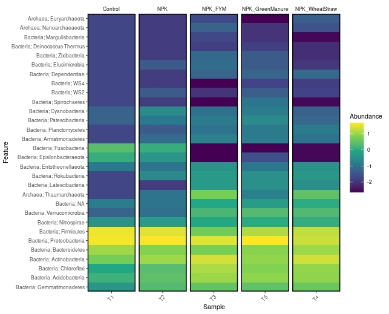
Heatmap at phylum level
3.1.2 Genus level
The heat-map shows an interactive view of genus composition and abundance among different samples.
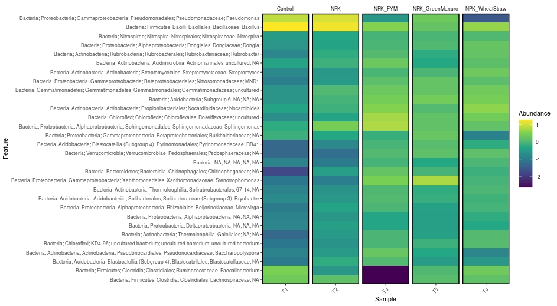
Heatmap at genus level
3.2 Relative Abundance Plot
The relative abundance plot was formed based on distribution of available genus in taxonomy for each sample.
3.2.1 Phylum level
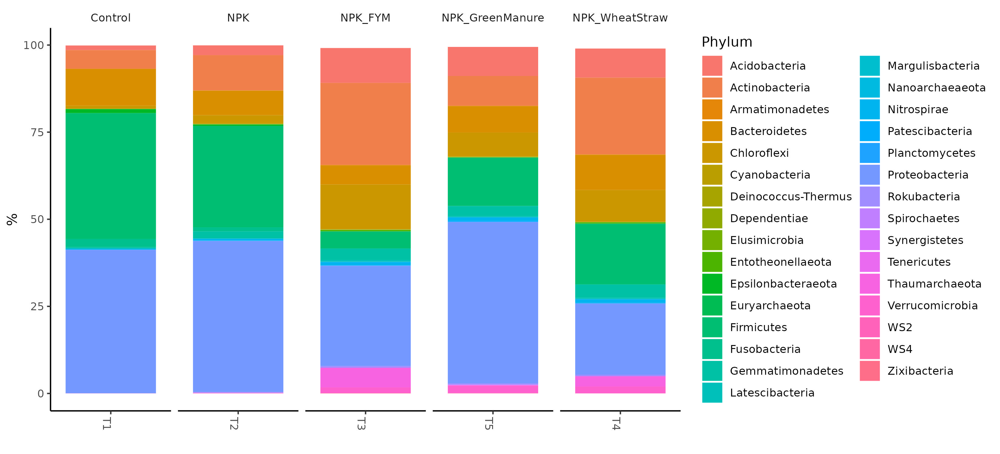
Relative abundance at phylum level
3.2.2 Genus level
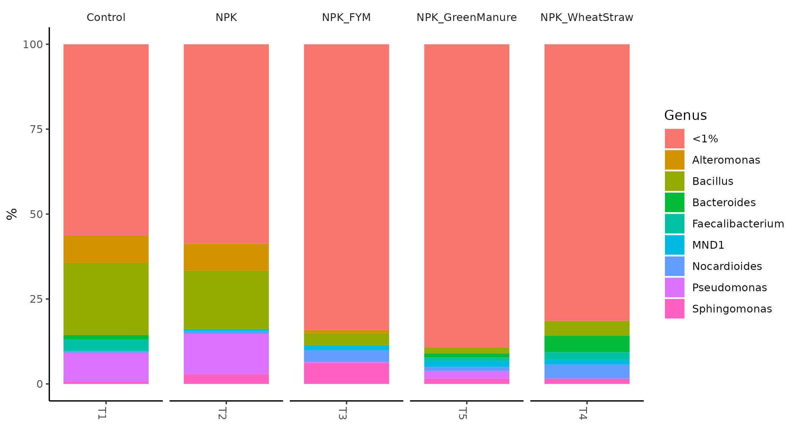
Relative abundance at genus level
3.3 Complex Heatmap
Complex heatmap is a powerful visualization method for revealing associations between multiple sources of information. They are efficient to visualize associations between different sources of data sets and reveal potential patterns.
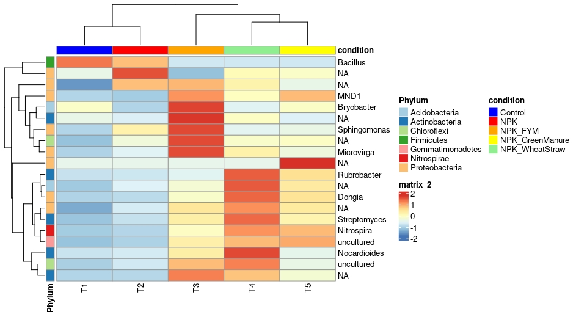
Complex Heatmap
3.4 Krona
KRONA visually displays the analysis result of species annotation. Circles from inside to outside stand for different taxonomic ranks, and the area of sector means respective proportion of different OTU annotation results.
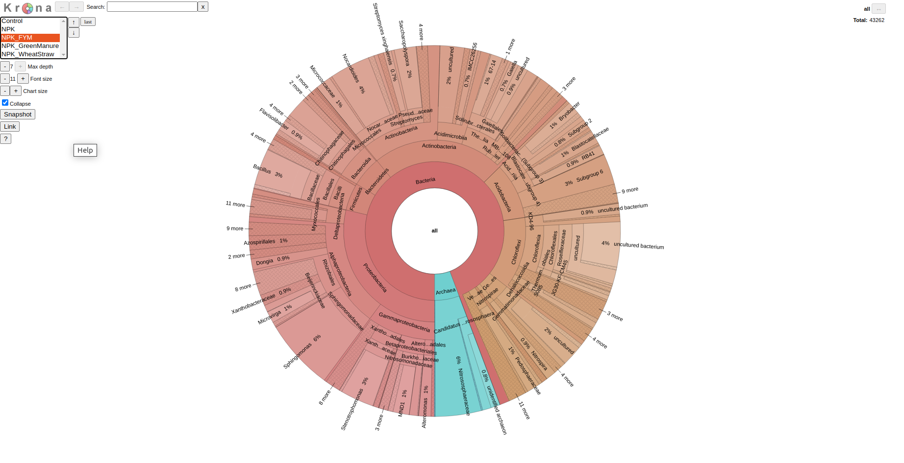
Krona plot
4.1 Alpha Diversity Analysis
Boxplots were formed to analyze the difference of Alpha Diversity indices between groups. T-test, wilcox and Tukey tests (T-test and Wilcox test are for 2 groups while Wilcox and Tukey tests are for groups more than 2) are performed for analysis of significance of difference between groups.
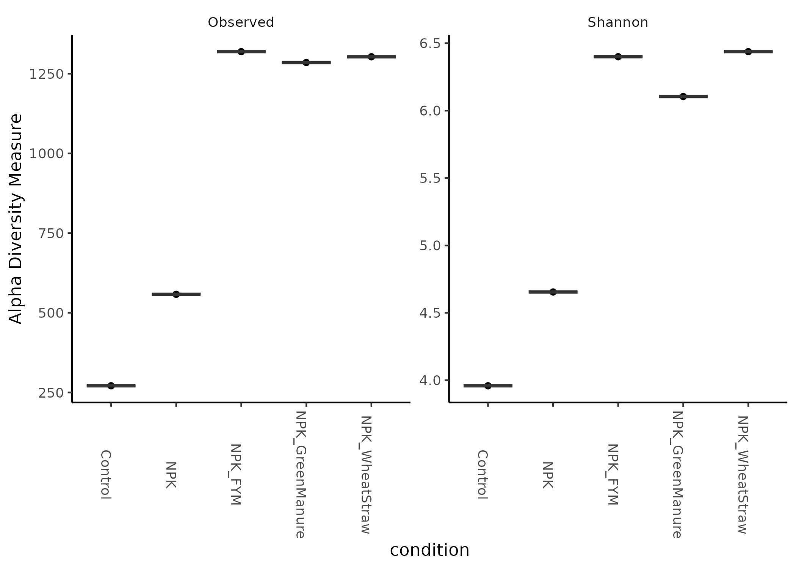
Boxplots for difference of observed species and shannon indices
4.2 Rarefaction Curves
The Rarefaction Curve is created by randomly selecting a certain amount of sequencing data from the samples, then counting the number of the species they represent. If the curve is steep, lots of the species remain to be discovered. If the curve becomes flatter, a credible number of samples have been taken, which means only the scarce species remain to be sampled.
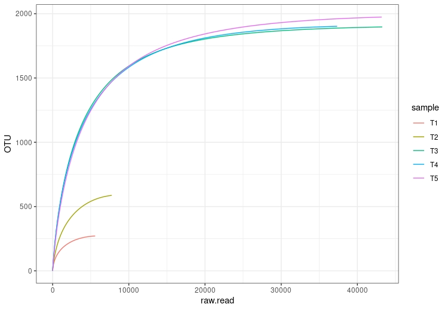
Rarefaction Curves
4.3 Principal component analysis (PCA)
Principal component analysis (PCA) is a statistical procedure to extract principal components and
structures in data by using orthogonal transformation and reducing dimensionalities of data.
It extracts the first two axises reflecting the variation of samples to the most extent thus can reflect
high-dimensional data’s variation in two-dimensional graphs, which reveals the simple principle embedding in complex data.
The more similar the composition of community among the samples are, the closer the distance of their corresponding
data points are on the PCA graph.
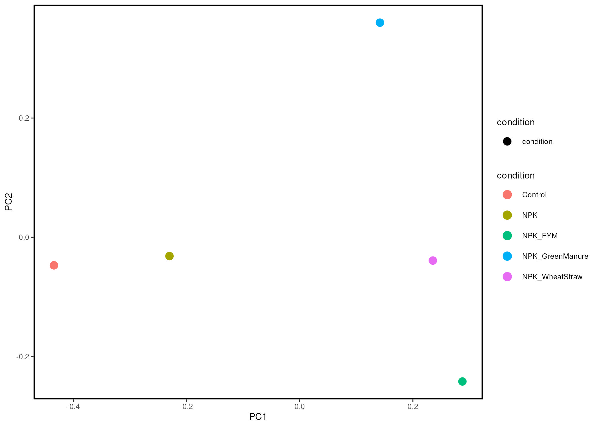
Principal component analysis (PCA) plot
5.1 Phylogenetic Tree
Phylogenetic Tree is defined as a diagrammatic representation of evolutionary relationship among living organisms.

Phylogenetic Tree for phylum Proteobacteria at genus level
5.2 Heat Tree
The Heat Tree Analysis is used to utilize the hierarchical structure of taxonomic classifications to quantitatively (using the median abundance) and statistically depict taxonomic differences between microbial communities.
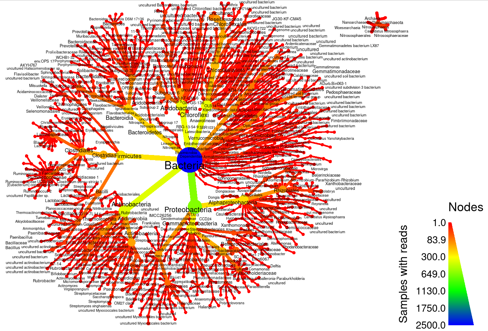
Heat Tree
Workflow
1. Preparation and sequencing
From the raw DNA samples to the final data, each step, including sample test, PCR, library preparation and sequencing, influences the quality of the data, and data quality directly impacts the analysis results. To keep the reliability of the data, quality control (QC) is performed at each step of the procedure.
2. Data analysis procedures
For the veracity of sequencing data analysis, raw data would be merged and filtered to get clean data. The effective data is used to do OTU cluster and species annotation for the respective sequence of each OTU. Thus, the relative species, evenness and abundance distribution can be analyzed with Alpha diversity, Beta diversity . Furthermore, OTU picking, taxonomic assignment construction of phylogenetic trees through downstream statistical analysis explain the community construction differences between samples or among groups via PCA.
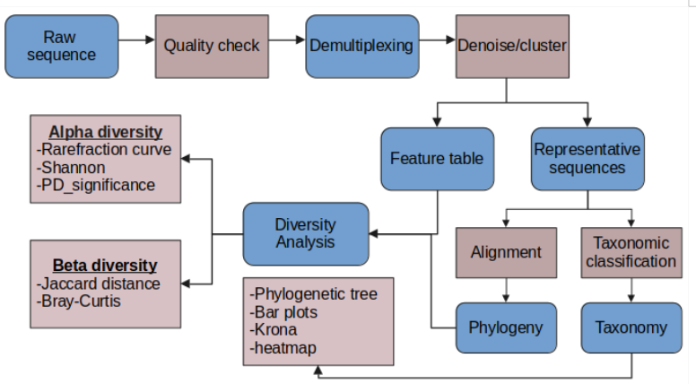